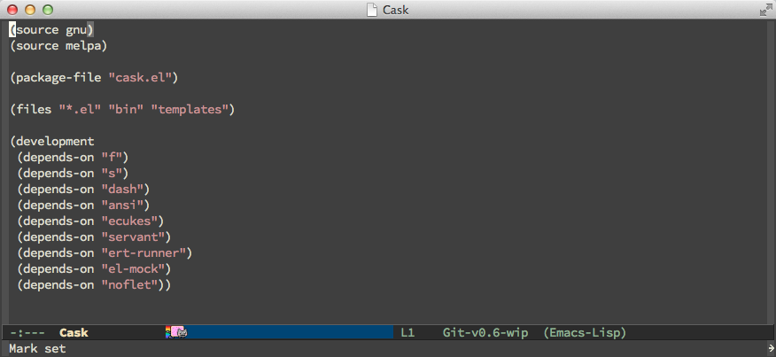

Cask is a project management tool for Emacs that helps automate the package development cycle; development, dependencies, testing, building, packaging and more.
Cask can also be used to manage dependencies for your local Emacs configuration.
Screenshot of Cask's own Cask-file. Yes, Cask is using Cask! :)